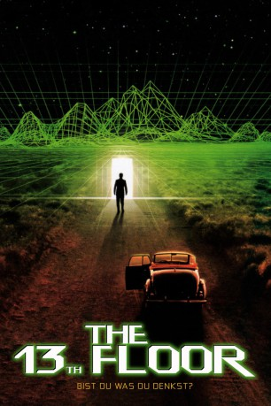

#6041 The 13th Floor - Bist du was du denkst?
Alternativ: The Thirteenth Floor
 
 IMDB-Wertung: 7.0 / 10
IMDB-Wertung: 7.0 / 10  Metascore: 0
Metascore: 0 
Los Angeles 1999: Der Computerexperte Hannon Fuller hat sich eine virtuelle Computerwelt, das L.A. der dreißiger Jahre, geschaffen und lebt in dieser Welt parallel zu der eigenen. Die Server dieser Simulation befinden sich im dreizehnten Stock einer Computerfirma. In diese Server kann sich der Nutzer einloggen und das L.A. der 30er Jahre bei vollem Bewusstsein genießen, sowie mit den computergenerierten anderen Spielfiguren interagieren als wären es echte Menschen. Weil er im Diesseits eine Entdeckung gemacht hat, wird er, noch bevor er seinem Kollegen Douglas Hall etwas mitteilen kann, ermordet. Er lebt jedoch auf der anderen Seite, der Vergangenheit, weiter. Hall begibt sich in die Simulation um den Mord an seinem Freund aufzuklären. Dort trifft er auf die Barkeeperfigur Ashton, die etwas zu wissen scheint...
Jahr: 1999
Dauer: 96 Minuten
FSK: 12
Land: Deutschland Studio: Jugendfilm-VerleihTonspuren: DD5.1 - ,
Untertitel:
Auflösung: 720p (1280x528) Größe: 4474 MB
Genre: Thriller, Sci-Fi, Mystery
Regisseur:  Josef Rusnak
Josef Rusnak
Drehbuch: Chris Roessner
Soundtrack:
Darsteller:
 Craig Bierko als Douglas Hall / John Ferguson / David
Craig Bierko als Douglas Hall / John Ferguson / David Armin Mueller-Stahl als Hannon Fuller / Grierson
Armin Mueller-Stahl als Hannon Fuller / Grierson Gretchen Mol als Jane Fuller / Natasha Molinaro
Gretchen Mol als Jane Fuller / Natasha Molinaro Vincent D'Onofrio als Jason Whitney / Jerry Ashton
Vincent D'Onofrio als Jason Whitney / Jerry Ashton Dennis Haysbert als Detective Larry McBain
Dennis Haysbert als Detective Larry McBain- Steven Schub als Detective Zev Bernstein
 Jeremy Roberts als Tom Jones
Jeremy Roberts als Tom Jones Rif Hutton als Joe
Rif Hutton als Joe Leon Rippy als Jane's Lawyer
Leon Rippy als Jane's Lawyer- Janet MacLachlan als Ellen
 Brad William Henke als Cop #1
Brad William Henke als Cop #1- Burt Bulos als Bellhop
- Howard S. Miller als Chauffeur
 Tia Texada als Natasha's Roommate
Tia Texada als Natasha's Roommate- Shiri Appleby als Bridget Manilla
 Bob Clendenin als Bank Manager
Bob Clendenin als Bank Manager Rachel Winfree als Bank Customer
Rachel Winfree als Bank Customer Alison Lohman als Honey Bear Girl
Alison Lohman als Honey Bear Girl Ernie Lively als 30's Cop
Ernie Lively als 30's Cop- Toni Sawyer als Grierson's Wife
 Lee Weaver als 30's Limo Driver
Lee Weaver als 30's Limo Driver- Travis Tedford als Newspaper Boy
- Jeff Blumenkrantz als Choreographer
- Johnny Crawford als Singer
 Glendon Rich als Detective , uncredited
Glendon Rich als Detective , uncredited- Mary Ann Schmidt als Bank Business Woman , uncredited
- Will Wallace als Other Ashton , uncredited
- Venessia Valentino als Concierge
- Meghan Ivey als Chanteuse
- Hadda Brooks als Lounge Piano Player
- Ron Boussom als Maitre D'
- Brooks Almy als Bridget's Mom
- Darryl Henriques als Cab Driver
- Suzanne Harrer als Tired Dancer
- Geoffrey Rivas als Security Guard
- Andrew Alden als Doorman
- Wiener Sängerknaben als Themselves
- Vivian Palermo als Woman on Beach , uncredited
- Tracy Perry als Party Member , uncredited
- Dea Natasja Rosenmeier als Erika Schmitt, the Cigarette Girl , uncredited
Datei: X:\1999\13th Floor - Bist du was du denkst, The (1999, FSK12, 1280x528).mkv seit 24.04.2017
Festplatte: HD 1996-2002
 Es gibt insgesamt 81 Filme in der Gruppe '1999'
Es gibt insgesamt 81 Filme in der Gruppe '1999'